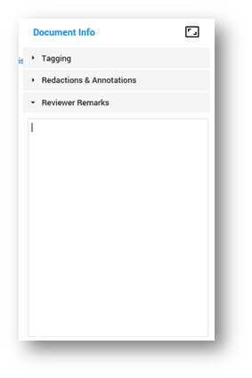
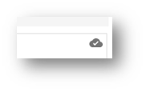
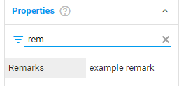

icon is shown.
Remarks are shown immediately in Properties widget (Remarks field).
icon is shown.
Remarks are shown immediately in Properties widget (Remarks field).
Remarks (max. 4000 characters by default) are saved when icon is shown.
Remarks are shown immediately in Properties widget (Remarks field).
To add a remark, click in the Reviewer Remarks box.

When your remark is saved, the cloud icon appears.

The remark is stored in the field Remarks. You can find it in the Properties panel on the left side of the screen.
